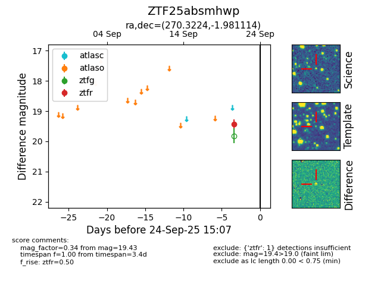

FINK: ZTF25absmhwp
Lasair: ZTF25absmhwp
ALeRCE: ZTF25absmhwp
ZTF25absmhwp (ztf,fink)
equatorial (ra, dec) = (270.3224,-1.98111)
galactic (l, b) = (25.3597,+10.21322)

last ztfr=19.43
1 ztfr detections